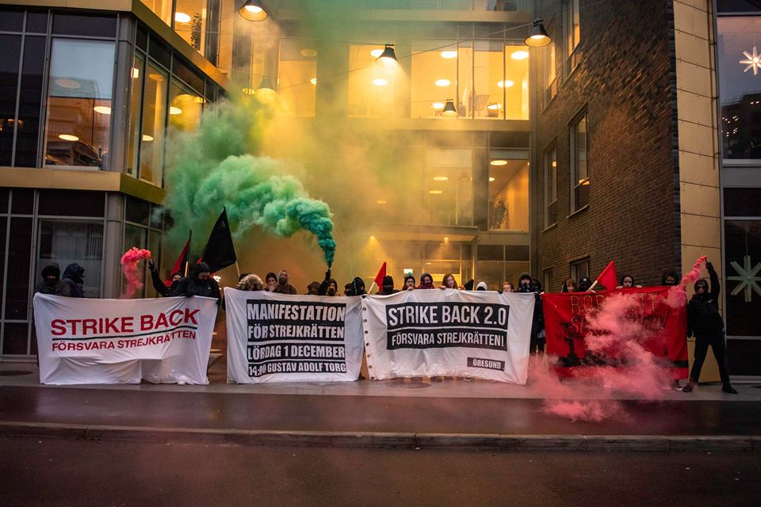

The IWW expresses its solidarity with SAC – Syndikalisterna, other grassroots unions, and Swedish workers.
We note that the Swedish government, in collaboration with big business and mainstream trade unions are proposing legislation that would severely restrict the right of workers to take industrial action in defence of their interests.
We consider this attack on Swedish workers as a form of class war more to be expected from authoritarian regimes than from a social democratic government and union bureaucracies who are in clear collaboration with the capitalist class.
In particular it will be illegal for Swedish unions to engage in strikes or other forms of action, including handing out leaflets outside a workplace for any other purpose than not having a collective bargaining agreement with an employer. The only recourse for discrimination or illegal sackings will now be a flawed labour court system.
It will be illegal to engage in a strike to get a collective bargaining agreement if a union is “known to not usually sign or hold” such an agreement. It will also be illegal to strike to get a collective bargaining agreement if there is already a collective bargaining agreement with another union – even if they have no members in the workplace or sector.
These proposals will severely reduce the potential for independent solidarity unions to take industrial action of any kind.
They also enable employers to create their own yellow unions or to incite unions organising the same workplaces into competition that suits the employer rather than the workers.
These proposals contravene ILO conventions ratified by Sweden in the 1940s as well as European Convention articles on the right to free association and the right to union organisation.
The IWW extends solidarity and applauds Swedish unions and workers who have taken to the streets in recent months in an effort to resist these reactionary proposals becoming law. Representatives from Danish and Norwegian unions have also campaigned at home as well as attending protests in Stockholm.
In recent decades the struggle against the restriction of union rights has become central to the global class war and it must therefore always be waged internationally. The IWW stands with our Fellow Workers in struggle in Sweden and across the world.
Industrial Workers of the World
Wales Ireland Scotland England Regional Administration, North American Regional Administration, Greece Regional Organising Committee